| Characteristic | N = 5941 |
|---|---|
| Gender | |
| Female | 334 (56.2%) |
| Male | 243 (40.9%) |
| Non-binary / third gender | 7 (1.2%) |
| Prefer not to say | 9 (1.5%) |
| Bayot | 1 (0.2%) |
| Country | |
| Brunei Darussalam | 12 (2.0%) |
| Singapore | 44 (7.4%) |
| Philippines | 76 (12.8%) |
| Thailand | 115 (19.4%) |
| Lao PDR | 62 (10.4%) |
| Indonesia | 63 (10.6%) |
| Vietnam | 126 (21.2%) |
| Cambodia | 41 (6.9%) |
| Malaysia | 44 (7.4%) |
| Myanmar | 8 (1.3%) |
| Timor Leste | 3 (0.5%) |
| Years of experience | |
| 1-5 years | 185 (31.1%) |
| 5-10 years | 164 (27.6%) |
| 10-15 years | 143 (24.1%) |
| 20 years or more | 102 (17.2%) |
| Type of institution | |
| Government funded | 328 (55.2%) |
| Private and industry | 164 (27.6%) |
| UK-funded | 80 (13.5%) |
| Others | 22 (3.7%) |
| Position at work | |
| Student (BSc, BA, MSc, MA, MPH, MD, PhD) | 58 (9.8%) |
| Research assistant | 82 (13.8%) |
| Research fellow, post-doctoral fellow, or other research positions | 110 (18.5%) |
| Lab technician | 23 (3.9%) |
| Research administrator or manager | 58 (9.8%) |
| Research doctor or nurse | 48 (8.1%) |
| Lecturer (main job is teaching, no research) | 43 (7.2%) |
| Assistant Professor | 42 (7.1%) |
| Associate Professor | 41 (6.9%) |
| Full Professor | 24 (4.0%) |
| Dean or Head of Department | 20 (3.4%) |
| Other, please specify: | 45 (7.6%) |
| 1 n (%) | |
Report
This analysis was performed on a dataset of 594 respondents.
Demographics
The majority of participants are female (56.2%) and based in Thailand (19.4%) or Vietnam (21.2%). Years of experience working in the country are fairly balanced, with 1-5 years being the most common (31.1%). Most participants work in government-funded institutions (55.2%). The majority are early-career researchers, with the most common positions being research fellow (18.5%), research assistant (13.8%), and student (9.8%).
Regarding area of research, the most frequent is public health and global health (33.6%), followed by biomedicine (23.7%) and social science (16.2%).
| Characteristic | N = 7641 |
|---|---|
| Area of research | |
| Biomedicine, medicine, nursing, clinical | 181 (23.7%) |
| Microbiology, virology, parasitology | 101 (13.2%) |
| Psychology, behavioural science | 39 (5.1%) |
| Public health, health policy, health systems, global health | 257 (33.6%) |
| Social sciences, humanities | 124 (16.2%) |
| STEM (science, technology, engineering, maths) | 62 (8.1%) |
| 1 n (%) | |
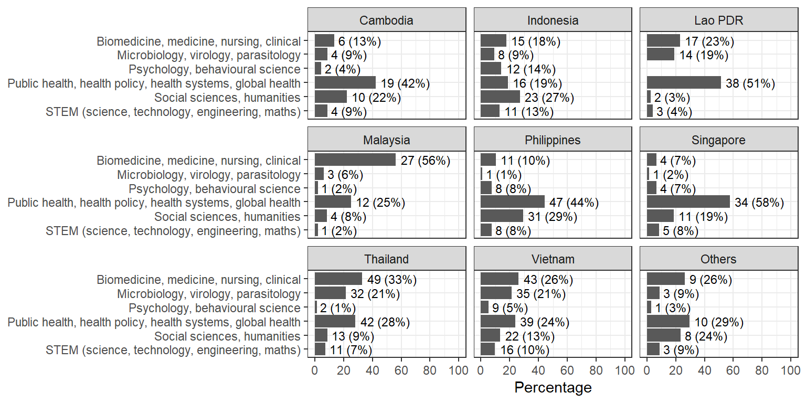
Comparison by country
Countries with less than 20 respondents (Brunei, Myanmar, Timor Leste) are grouped into “Others”.
Overall, participants in Vietnam reported the most positive experiences with research culture, with many selecting “somewhat agree” to “strongly agree” across most questions. The statement “I am satisfied with the way research performance is assessed my organization e.g., academic publications, or obtaining a research grant” received the lowest overall agreement. Around half of respondents from Indonesia, Malaysia, Singapore, Brunei, Myanmar, and Timor-Leste disagreed or were neutral on this point.
| Characteristic | Cambodia N = 411 |
Indonesia N = 631 |
Lao PDR N = 621 |
Malaysia N = 441 |
Philippines N = 761 |
Singapore N = 441 |
Thailand N = 1151 |
Vietnam N = 1261 |
Others N = 231 |
|---|---|---|---|---|---|---|---|---|---|
| q9_1_int | 4 (4, 5) | 4 (3, 5) | 4 (4, 5) | 4 (3, 5) | 4 (4, 5) | 4 (3, 4) | 4 (4, 5) | 5 (4, 5) | 4 (2, 5) |
| q9_2_int | 4 (3, 5) | 4 (3, 5) | 4 (4, 5) | 4 (2, 4) | 4 (3, 5) | 4 (3, 4) | 4 (3, 5) | 5 (4, 5) | 3 (2, 5) |
| q9_3_int | 4 (4, 5) | 3 (2, 4) | 4 (4, 5) | 2 (2, 3) | 4 (2, 4) | 3 (2, 5) | 4 (3, 5) | 4 (3, 5) | 3 (2, 4) |
| q9_4_int | 4 (4, 5) | 3 (2, 4) | 4 (3, 5) | 3 (2, 4) | 4 (2, 4) | 3 (2, 4) | 4 (3, 5) | 5 (4, 5) | 3 (1, 4) |
| q9_5_int | 4 (4, 5) | 4 (3, 5) | 5 (4, 5) | 4 (2, 5) | 4 (4, 5) | 4 (2, 4) | 4 (4, 5) | 5 (4, 5) | 4 (3, 5) |
| 1 Median (Q1, Q3) | |||||||||
I think research culture is evolving for the better
The most common responses across the region were “Somewhat agree” to “Strongly agree”. However, respondents from Indonesia, Malaysia, Singapore, Brunei, Myanmar, and Timor-Leste showed a higher proportion of neutral to negative responses.
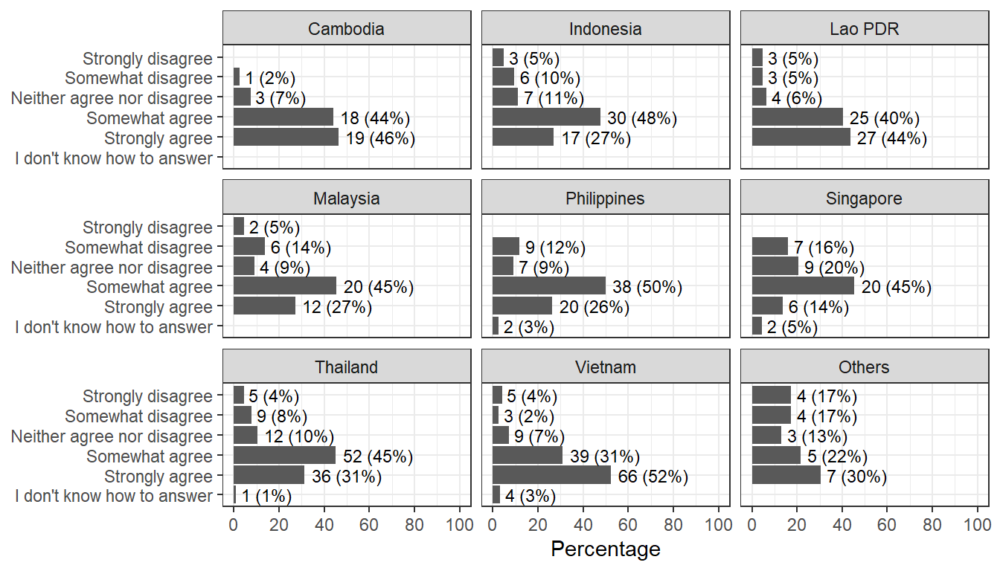
There is equity in decision-making and giving credit for research within my organisation
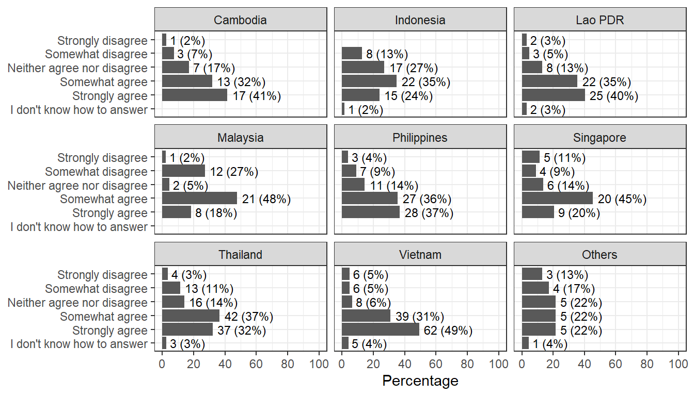
International research funders and/or foreign researchers dominate the research priorities of my country
I am satisfied with the way research performance is assessed my organization e.g., academic publications, or obtaining a research grant
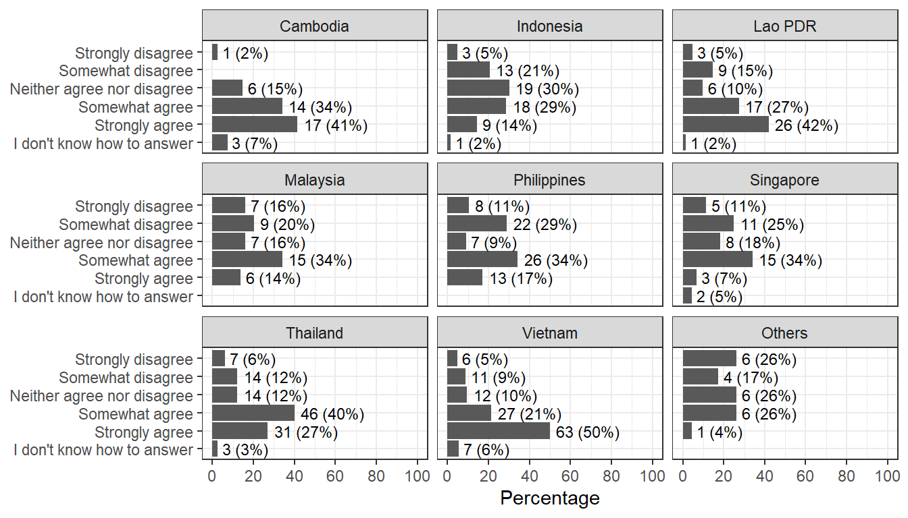
At my organization, there is collaboration rather than competition between researchers
Do you think career progression (for instance, to senior positions) is harder for certain groups of researchers, e.g., women, early career researchers?
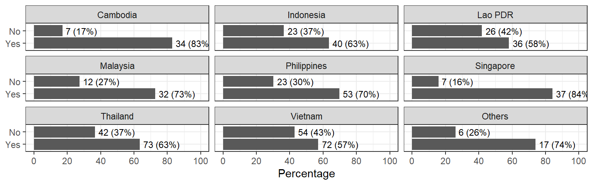
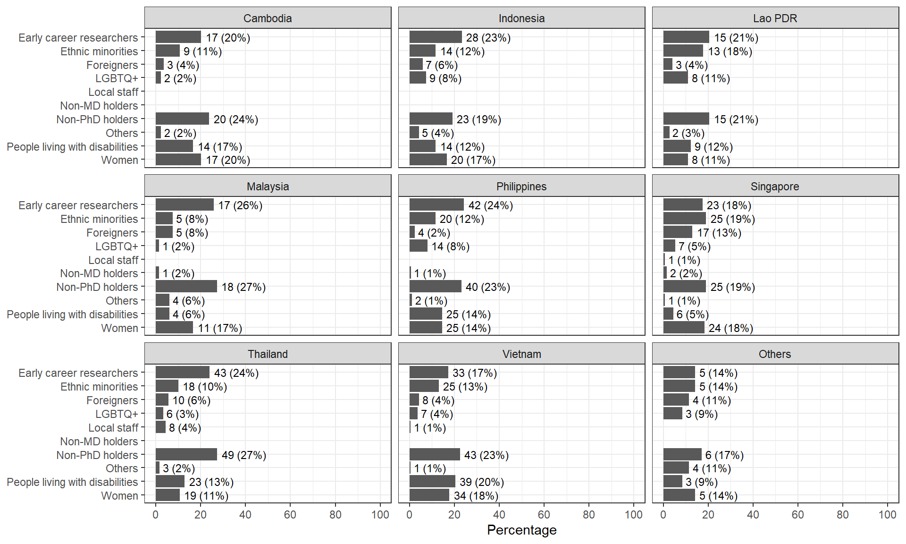
Comparison by gender
“Non-binary/third gender”, “Prefer not to say” and “Bayot” are grouped into “Others”.
I think research culture is evolving for the better

There is equity in decision-making and giving credit for research within my organisation
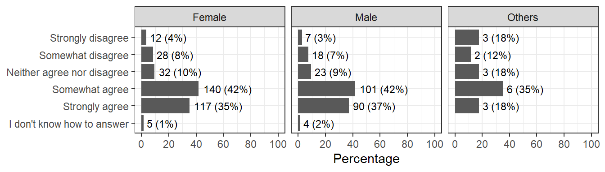
International research funders and/or foreign researchers dominate the research priorities of my country
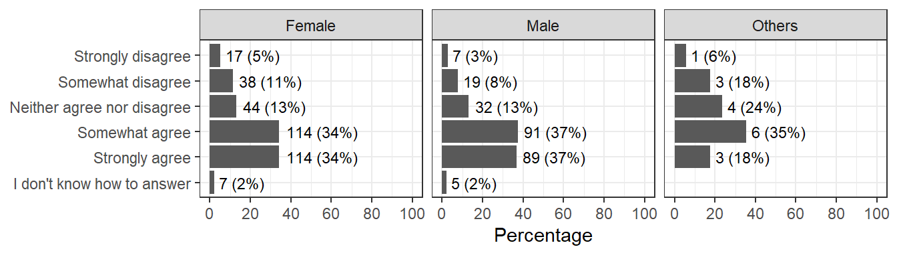
I am satisfied with the way research performance is assessed my organization e.g., academic publications, or obtaining a research grant
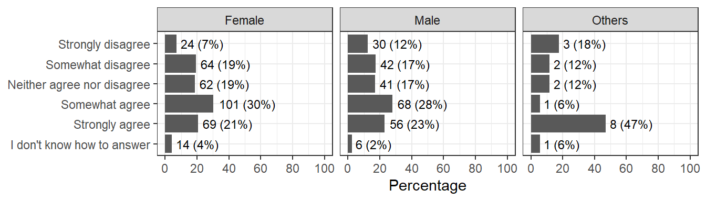
At my organization, there is collaboration rather than competition between researchers
Do you think career progression (for instance, to senior positions) is harder for certain groups of researchers, e.g., women, early career researchers?
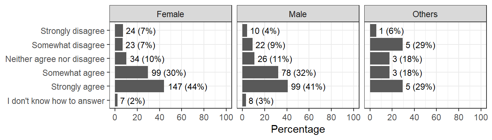
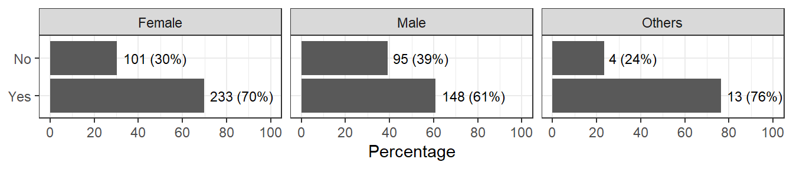
Comparison by career stage
| Position | Career stage |
|---|---|
|
Early-career |
|
Senior |
|
Support staff |

I think research culture is evolving for the better

There is equity in decision-making and giving credit for research within my organisation

International research funders and/or foreign researchers dominate the research priorities of my country
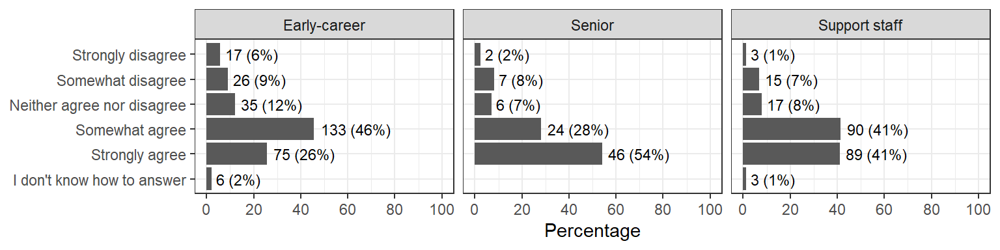
I am satisfied with the way research performance is assessed my organization e.g., academic publications, or obtaining a research grant
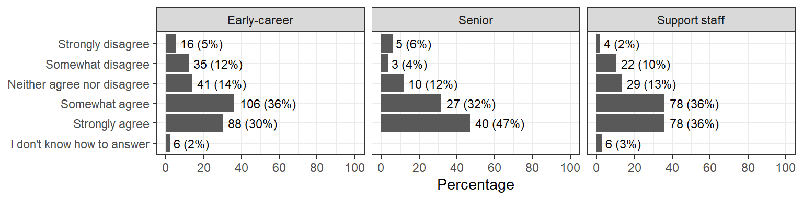
At my organization, there is collaboration rather than competition between researchers
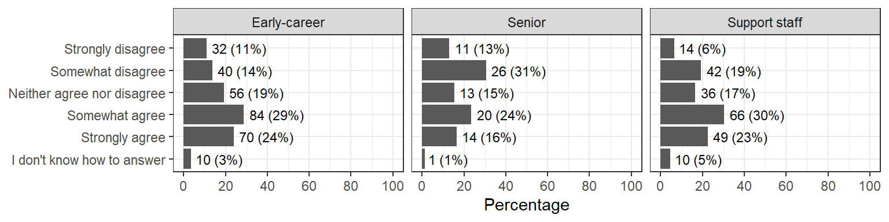
Do you think career progression (for instance, to senior positions) is harder for certain groups of researchers, e.g., women, early career researchers?
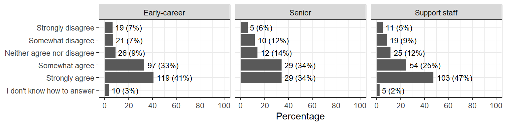
Comparison by scientific discipline
| Characteristic | Biomedicine, medicine, nursing, clinical N = 1811 |
Microbiology, virology, parasitology N = 1011 |
Psychology, behavioural science N = 391 |
Public health, health policy, health systems, global health N = 2571 |
Social sciences, humanities N = 1241 |
STEM (science, technology, engineering, maths) N = 621 |
|---|---|---|---|---|---|---|
| q9_1_int | 4 (4, 5) | 4 (4, 5) | 4 (3, 5) | 4 (4, 5) | 4 (4, 5) | 4 (4, 5) |
| q9_2_int | 4 (3, 5) | 4 (4, 5) | 4 (3, 5) | 4 (3, 5) | 4 (3, 5) | 4 (3, 5) |
| q9_3_int | 4 (2, 4) | 4 (3, 5) | 3 (2, 4) | 4 (3, 5) | 3 (2, 4) | 3 (2, 4) |
| q9_4_int | 4 (3, 5) | 4 (4, 5) | 4 (3, 4) | 4 (3, 5) | 3 (2, 4) | 4 (2, 5) |
| q9_5_int | 4 (4, 5) | 5 (4, 5) | 4 (3, 5) | 4 (4, 5) | 4 (3, 5) | 4 (3, 5) |
| 1 Median (Q1, Q3) | ||||||
I think research culture is evolving for the better
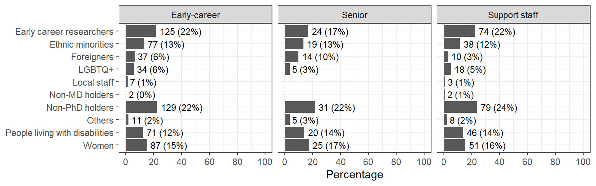
There is equity in decision-making and giving credit for research within my organisation

International research funders and/or foreign researchers dominate the research priorities of my country
I am satisfied with the way research performance is assessed my organization e.g., academic publications, or obtaining a research grant
At my organization, there is collaboration rather than competition between researchers
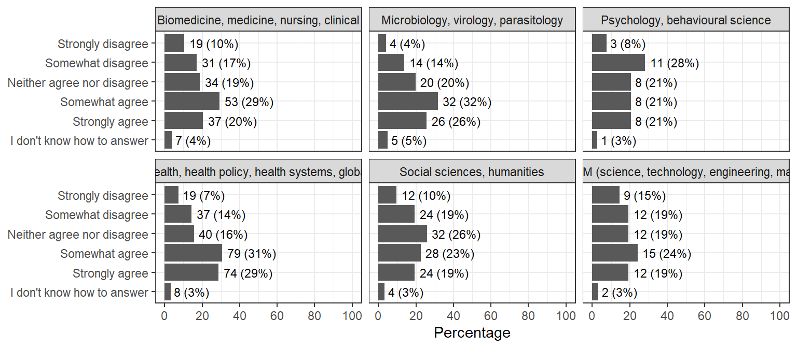
Do you think career progression (for instance, to senior positions) is harder for certain groups of researchers, e.g., women, early career researchers?

Comparison by funding source (with a focus on UK-funded)
UK-funded institutions in this survey are based in Lao PDR, Thailand, and Vietnam. All comparisons are made within each country, we compare UK-funded participants to their counterparts in other sectors.
| Characteristic | Cambodia N = 411 |
Indonesia N = 631 |
Lao PDR N = 621 |
Malaysia N = 441 |
Philippines N = 761 |
Singapore N = 441 |
Thailand N = 1151 |
Vietnam N = 1261 |
Others N = 231 |
|---|---|---|---|---|---|---|---|---|---|
| q5_category | |||||||||
| Government funded | 26 (63%) | 25 (40%) | 36 (58%) | 40 (91%) | 38 (50%) | 42 (95%) | 47 (41%) | 57 (45%) | 17 (74%) |
| Private and industry | 13 (32%) | 35 (56%) | 9 (15%) | 4 (9.1%) | 37 (49%) | 2 (4.5%) | 39 (34%) | 20 (16%) | 5 (22%) |
| UK-funded | 0 (0%) | 1 (1.6%) | 10 (16%) | 0 (0%) | 1 (1.3%) | 0 (0%) | 24 (21%) | 43 (34%) | 1 (4.3%) |
| Others | 2 (4.9%) | 2 (3.2%) | 7 (11%) | 0 (0%) | 0 (0%) | 0 (0%) | 5 (4.3%) | 6 (4.8%) | 0 (0%) |
| 1 n (%) | |||||||||
Overall, participants at UK-funded institutions reported a more positive research culture than those in other sectors. In response to the statement “International research funders and/or foreign researchers dominate the research priorities of my country” (Q9_3), UK-funded staff in Lao PDR were less likely to agree, while most UK-funded staff in Thailand and Vietnam agreed, the percentage are similar to those in the government-funded sector.
| Characteristic |
Lao PDR
|
Thailand
|
Vietnam
|
||||||
|---|---|---|---|---|---|---|---|---|---|
| Government funded N = 361 |
Private and industry N = 91 |
UK-funded N = 101 |
Government funded N = 471 |
Private and industry N = 391 |
UK-funded N = 241 |
Government funded N = 571 |
Private and industry N = 201 |
UK-funded N = 431 |
|
| q9_1_int | 5 (4, 5) | 4 (4, 5) | 4 (2, 5) | 4 (3, 5) | 4 (4, 5) | 4 (4, 5) | 5 (4, 5) | 4 (4, 5) | 5 (4, 5) |
| q9_2_int | 4 (4, 5) | 4 (3, 5) | 5 (3, 5) | 4 (3, 5) | 4 (3, 5) | 4 (4, 5) | 5 (4, 5) | 5 (4, 5) | 5 (4, 5) |
| q9_3_int | 4 (4, 5) | 5 (4, 5) | 4 (2, 5) | 4 (2, 5) | 4 (3, 5) | 4 (3, 5) | 4 (3, 5) | 4 (3, 5) | 4 (3, 5) |
| q9_4_int | 4 (4, 5) | 3 (2, 5) | 4 (3, 5) | 4 (2, 4) | 4 (3, 5) | 4 (4, 5) | 5 (4, 5) | 4 (4, 5) | 5 (4, 5) |
| q9_5_int | 5 (4, 5) | 4 (3, 5) | 5 (4, 5) | 4 (2, 5) | 4 (4, 5) | 4 (4, 5) | 5 (4, 5) | 5 (4, 5) | 5 (4, 5) |
| 1 Median (Q1, Q3) | |||||||||
I think research culture is evolving for the better

There is equity in decision-making and giving credit for research within my organisation

International research funders and/or foreign researchers dominate the research priorities of my country
I am satisfied with the way research performance is assessed my organization e.g., academic publications, or obtaining a research grant
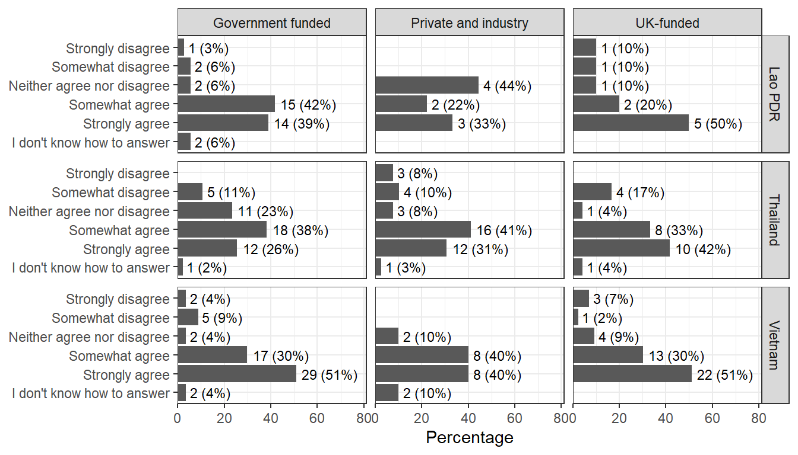
At my organization, there is collaboration rather than competition between researchers
Do you think career progression (for instance, to senior positions) is harder for certain groups of researchers, e.g., women, early career researchers?
Across all sectors, most participants agreed that some groups of researchers face greater barriers to career progression.
Across all sectors, participants agreed that non-PhD holders and early career researchers face more challenges in career progression. At UK-funded institutions, more respondents in Thailand (13%) and Vietnam (1%) reported that local staff are harder to progress, which is higher than in government or private sectors (2-3% in Thailand, 0% in Vietnam).
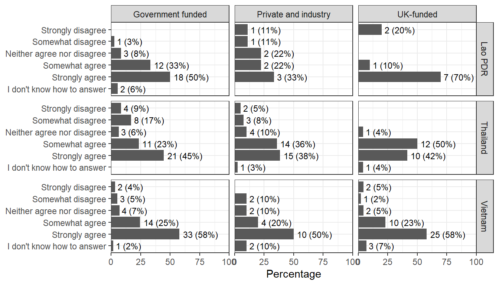